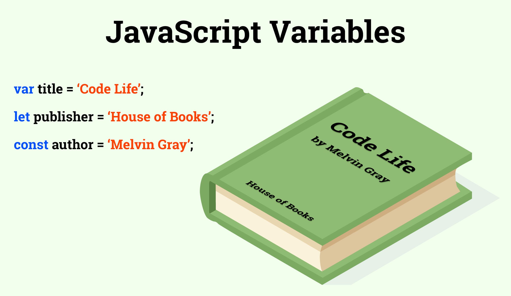

Variables y constantes en JavaScript
Conceptos fundamentales sobre cómo declarar y utilizar variables y constantes en JavaScript.

Formas de declarar
- var: alcance global o de función, hoisting (evítalo en código moderno).
- let: alcance de bloque, reasignable.
- const: alcance de bloque, no reasignable.
Ejemplos
// var
var x = 1;
// let
let y = 2;
y = 3;
// const
const PI = 3.1416; // no se puede reasignar
Nota: un const que referencia un objeto permite mutar sus propiedades, pero no reasignar la variable.